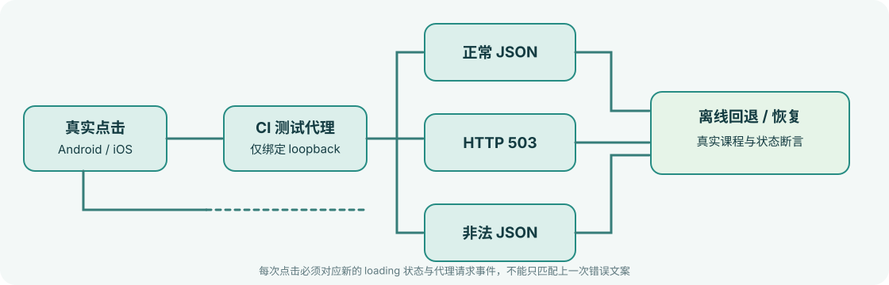

Android Emulator API 35
UIAutomator 四个场景通过：首次请求、刷新、HTTP 503、非法 JSON、恢复；成功请求计数依次达到 1、2、3。
查看 Android 完整日志 ↗真实点击、请求、错误响应、离线回退与恢复。Android 用 UIAutomator，iOS 用 Maestro；只有 UI 状态和服务端事件同时吻合，才能判定一次端到端测试通过。

flowchart LR Tap["测试机器人点击刷新"] --> Loading["正在重新验证 API"] Loading --> Proxy["CI loopback proxy"] Proxy --> Normal["合法 NestJS JSON"] Proxy --> Down["HTTP 503"] Proxy --> Bad["HTTP 200 / 非法 JSON"] Down --> Offline["保留离线课程"] Bad --> Offline Normal --> Success["更新课程与成功状态"] Offline --> Recover["切回 ok 并再次点击"] Recover --> Success Success --> Evidence["设备截图 / 服务器事件 / UI 日志"]
UIAutomator 四个场景通过：首次请求、刷新、HTTP 503、非法 JSON、恢复；成功请求计数依次达到 1、2、3。
查看 Android 完整日志 ↗Maestro 2.11.0 的 refresh、unavailable、malformed、recovered 四个 Flow 全部完成点击和最终 UI 状态断言。
查看 iOS 完整日志 ↗这次 E2E 验证已在 Android 模拟器和 iOS 模拟器通过；物理手机、Release 签名与商店分发仍不在本轮通过范围内。
| 场景 | 代理行为 | 客户端预期 | 必须出现的事件 |
|---|---|---|---|
| 正常 | 转发 NestJS 有效 JSON | 三节课程和契约成功状态 | valid-api-hit |
| 服务不可用 | 返回 HTTP 503 | 离线课程保留 | injected-http-503 |
| 响应非法 | HTTP 200 + 非法 JSON | 解析失败，离线回退 | injected-malformed-json |
| 恢复 | 重新代理 NestJS 有效 JSON | 更新课程与成功状态 | 新的 valid-api-hit |
从原生无障碍控件树中解析按钮边界，再通过 ADB 真正点击。点击后等待代理事件，不接受假造坐标或只匹配旧错误文案。
使用 iOS 无障碍层点击 kv-api-refresh。每个 Flow 真实点击按钮后，等待该场景独有的终态；同时必须检查代理事件计数增加，防止旧错误文案导致假阳性。
测试控制只在 KV_DEVICE_TEST_MODE=1 且 loopback 请求中开放，不进入生产服务或用户设备。
cd knowledge/monorepo/fullstack/project pnpm install --frozen-lockfile node --test tests/device-proxy.test.mjs tests/device-faults.test.mjs bash tools/device-smoke/android.sh bash tools/device-smoke/ios.sh